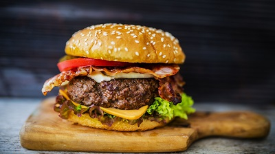

I menyen finner du et utvalg kjente, og mindre kjente retter. Disse er nøye valgt ut for å gi deg den beste matopplevelsen mulig. Alle allergener matrettene kan inneholde vil være listet opp nederst i menyen med hvert sitt tall. Disse tallene kan du igjen se på de ulike rettene for å finne ut hvilke allergener retten inneholder.
Dette er retter for deg som ikke kjenner sulten gnage, men som allikevel kanskje vil ha en smak av vårt gode kjøkken. Forrettene kan også kjøpes som tilbehør til hovedretter


Egg og bacon fra lokale omgivelser servert med hjemmebakt brød og potetsalat
- 79kr
1, 3, 5, 10, 11
2 grove brød med hjemmelaget hvitløkssmør. Velg mellom å ha smøret separat, eller innbakt i brødet - 59kr
3, 5, 10
Biff- eller kylling-wrap fylt med agurk, paprika, mangosalat og rød chili. Toppet opp med husets rømmesaus
- 69kr
4, 5, 10, 12
Nachochips dekket av smeltet ost servers med husets rømmesaus, sterk salsa og guacamole
- 109kr
3, 4, 5, 10
Nå er det på tide å gjøre seg klar for en matopplevelse du sent vil glemme. Med lokalproduserte råvarer og kjærlighet til kunsten har kokkene på kjøkkenet skapt disse kunstverkene. Det skal mye til for å gå ifra bordet sulten ettersom maten er ufattelig god. Velg og vrak, alle rettene under er sinnsykt gode.
Husets spesialitet. 320g lokalt storfekjøtt grillet med perfeksjon over kull. Serveres med råvarer fra Trønderlag, og den mest perfekte sylteagurgen importert fra Spania. Valg av poteter: fløtegratinerte, båter, pom frittes
- 349kr
3, 4, 5, 10, 11
Den klassiske burgeren. 160g storfekjøtt servert med baconskiver, cheddarost og BBQ-saus. Valg av poteter: fløtegratinerte, båter, pom frittes
- 179kr
3, 4, 5, 10, 11, 13
Husets blåmuggostdelikatesse. 200g storfekjøtt servert med valgfritt tilbehør (spør kelner), og hjemmelaget blåmuggostsaus. Valg av poteter: fløtegratinerte, båter, pom frittes
- 249kr
3, 4, 5, 10, 11, 13
Den enkleste burgeren. Denne er for deg som ikke vil ha noe ekstra på burgeren, men som heller liker den mer plain. Hvorfor ødelegge en god burger? Serveres med storfekjøtt (150g, 180g, 220g), cheddarost, tomat og hjertesalat. Valg av
poteter: fløtegratinerte, båter, pom frittes
- 129kr
3, 4, 5, 10, 11
Etter å ha spist seg god å mett på en av verdens beste burgere er det uklart om man har mer plass der nede. Om man skulle ha det så skal det ikke stå på kvaliteten av dessertene vi tilbyr. Under finner du et utvalg av hjemmelagde og smakfulle desserter som får deg til å glemme at du er mett. Prøv da vel.

Har du noengang drømt om å svømme i flytende sjokolade? Husets sjokoladefondant ser kanskje ut som en kake, men når du sette skjeen i den finner du fort ut at varm flytende sjokolade flyter utover tallerkenen. Denne delikatessen blir
servert med husets vaniljeis og smaker rett og slett helt fantastisk
- 79kr
1, 2, 3, 5, 10
Den klassiske banansplitten. To bananer på hver side av 3 kuler med forkskjellige smaker (eller samme om du så velger): sjokolade, vanilje og jordbær. Serveres med krem og kirsebær.
- 99kr
1, 2, 3
Selv om det kanskje ikke er noens bursdag så finnes det en unnskyldning for å spise sjokoladekake; den er jo så øyesvimlende god. Serveres med 2 kuler valgfri is ved siden av (sjokolade, vanilje, pistasj, jordbær)
- 69kr
1, 2, 3, 5, 10
20+
Smak på denne kanelhimmelen. Husets kanelbakverk bakt med fireball. Dette er noe du aldri kommer til å spise noen andre steder. Serveres med 2 kuler valgfri is ved siden av (sjokolade, vanilje, pistasj, jordbær), OG
en shot (4cl) Fireball
- 159kr
1, 2, 3, 4, 5, 10
Man kan ikke spise fantastisk mat uten fantastisk drikke. The Fancy Pickle tilbyr et utvalg alkoholholdige og alkoholfrie drikker. Merk at skjenkeloven gjelder, og det vil derfor bli spurt etter legitimasjon hvis vi tror du er under 25 år gammel. Om ikke annet står vil drikkene bli servert i halvliterglass (0.5l).
Coca cola - 59kr
Coca cola zero - 49kr
Coca cola light - 49kr
Sprite - 59kr
Fanta - 59kr
Farris - 49kr
Kaffe - 39kr
Varm sjokolade - 39
Eplemost - 39kr
Kuli - 29kr
Coca cola - 59kr
Coca cola zero - 49kr
Coca cola light - 49kr
Sprite - 59kr
Fanta - 59kr
Farris - 49kr
Kaffe - 39kr
Varm sjokolade - 39
Eplemost - 39kr
Kuli - 29kr
Om det er noe servitørene kan gjøre så er det bare å rope. De er her for å gjøre din opplevelse til den beste mulig. Det er bare å spørre etter egenkonstruering av retter, dog dette kan endre prisen. Det er anbefalt å velge en av de predefinerte rettene, ettersom råvarene og kombinasjonen av disse er valgt ut nøye for å gi akkurat deg den beste matopplevelsen Trondheim har å by på.